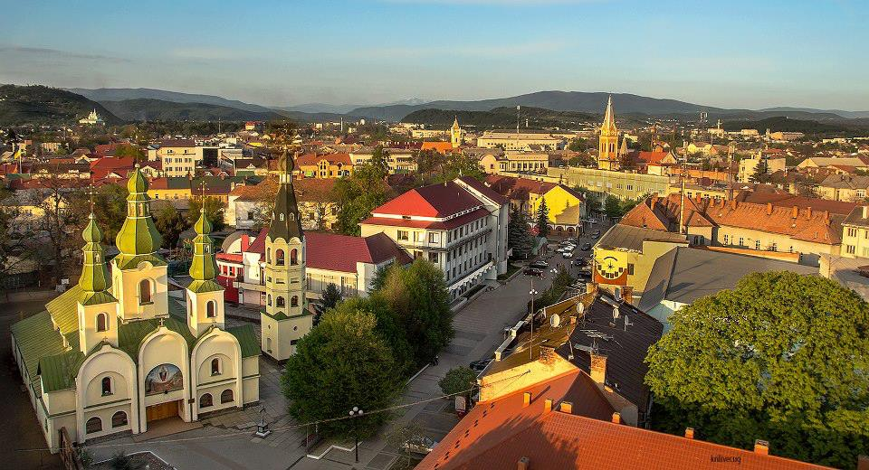

What is it famous for?
Ukraine is one of the most beautiful countries and it is very popular for its beautiful landscapes.So, here you can find lots of nice places where you can walk. These landmarks are unique and captivating. Come and see the beauty that Ukraine offers tourists. It is carefully preserved by the state and deeply honoured by the locals.
Ukraine is home to numerous sites of natural beauty and wonder. Most seasoned travelers have heard of the unique cultural wonders and sites to be found in some of the larger cities, such as Kiev and Odessa, but to truly maximize your experience in Ukraine, plan a visit to some of the amazing natural miracles within our wondrous country.

Where is it?
Ukraine is a country in Eastern Europe. It is the second-largest European country.
Climate
Ukraine has a mostly temperate climate, except for the southern coast of Crimea which has a subtropical climate.Average annual temperatures range from 5.5–7 °C (41.9–44.6 °F) in the north, to 11–13 °C (51.8–55.4 °F) in the south.Precipitation is highest in the west and north and lowest in the east and southeast.Western Ukraine, particularly in the Carpathian Mountains, receives around 120 centimetres (47.2 in) of precipitation annually, while Crimea and the coastal areas of the Black Sea receive around 40 centimetres (15.7 in)
Language
The national language is Ukrainian, although you will have no problems if you speak English.